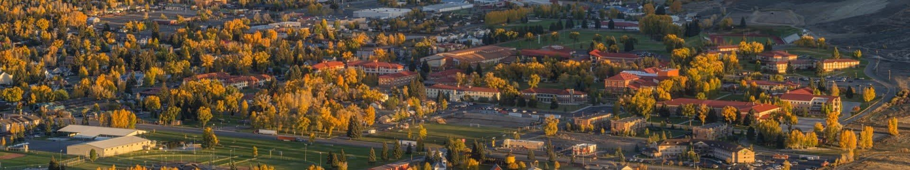
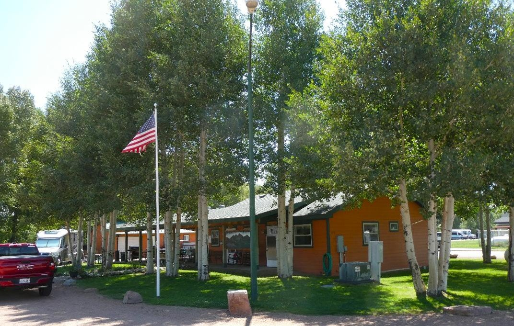
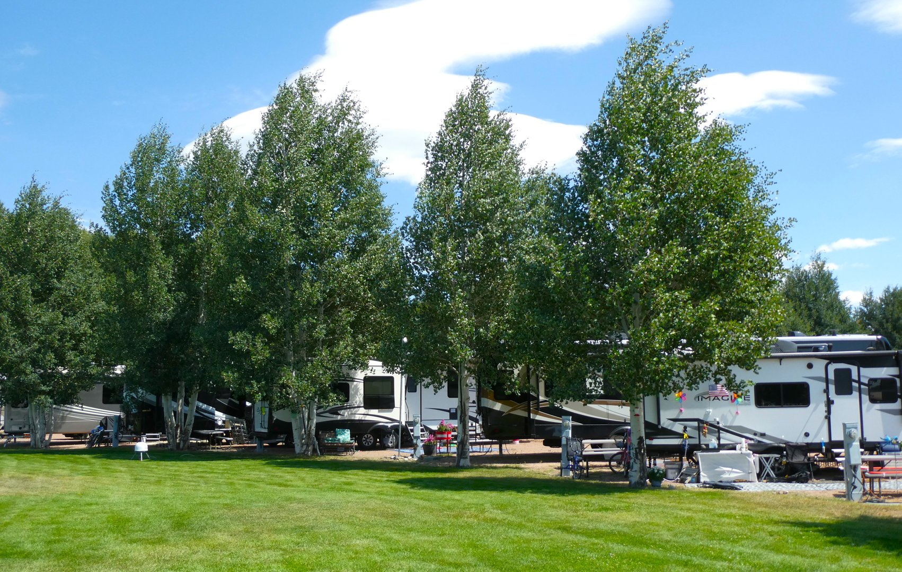
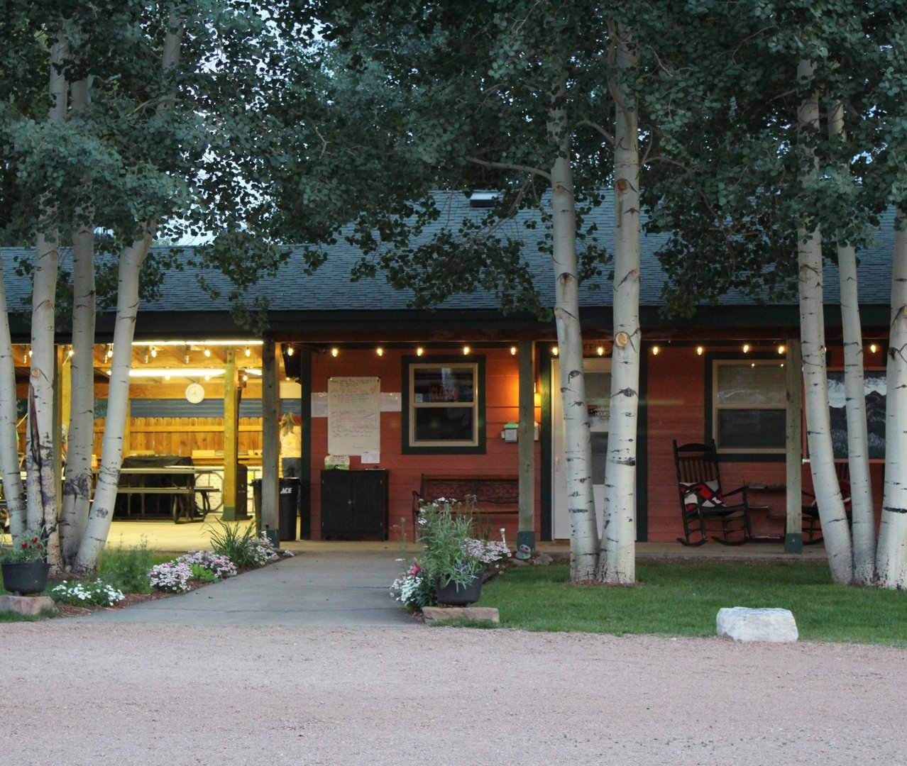

The Mission of the Gunnison Home Association (GHA) is to assist in the provision of basic needs and amenities to seniors in the Gunnison Valley. These services may include housing, food assistance, transportation, medical needs or social and cultural enrichment. It is our goal through our activities and grant program to provide financial assistance to be used to enhance the lives of senior citizens in our area, whether full-time or seasonal residents.
The GHA is a 501(c)(3) non-profit corporation/organization for the charitable purpose of supporting long term care and many other senior services.



The Gunnison Home Association (GHA) of Gunnison, Colorado will be awarding grants for programs
that benefit Gunnison area senior citizens.
Funded activities must take place between January 1,
and December 31, with a final report on how the monies were spent due by September 30 of the grant
funding year.
Applicants must target the senior (55+) population of the Gunnison area.